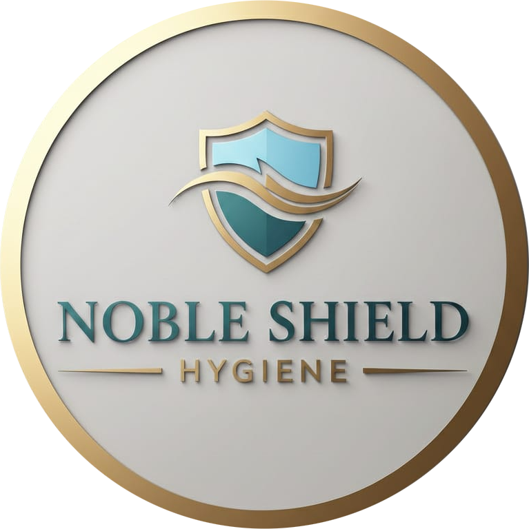
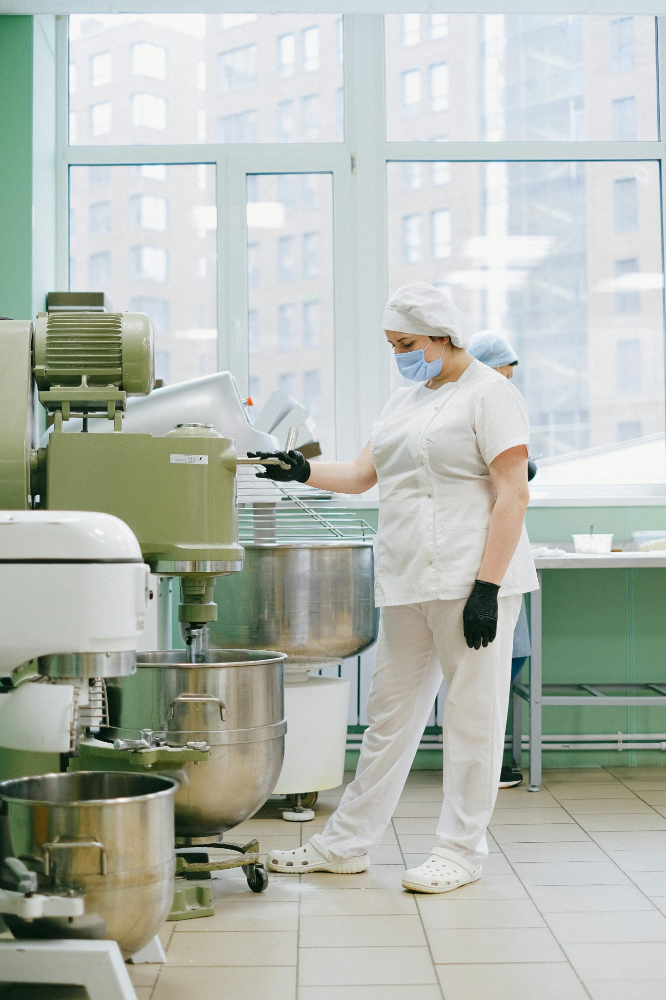
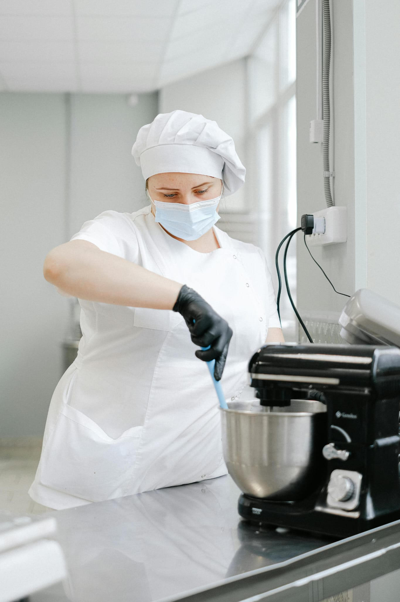

Build consumer trust and meet United Kingdom food safety regulations with UK and European recognized HACCP and NobleShield Food Safety certification courses.

Professional Food Safety Training

HACCP Certification Programs
Noble Shield Certified Courses in the United Kingdom
The NobleShield Food Safety and HACCP certification courses offered by NobleShield Hygiene are designed to help food industry professionals maintain the highest standards of hygiene, safety, and quality control.
Delivered across key locations, these courses support food producers, caterers, and hospitality businesses in meeting both United Kingdom - London and international food safety standards.
Our training goes beyond compliance — it empowers teams to understand food hazards, implement effective controls, and protect customers and brand reputation through safe handling, preparation, and storage practices.
The Food Safety and HACCP training is structured to match the operational needs of different sectors across the United Kingdom, from industrial kitchens to logistics hubs and remote sites.
All modules align with United Kingdom food safety regulations and internationally accepted hygiene standards.
Upon completing the NobleShield Food Safety and HACCP certification course, participants will be able to:
Each course combines theoretical knowledge with practical demonstrations, including contamination control exercises, hygiene inspections, and audit preparation.
Successful candidates receive an internationally recognized NobleShield Food Safety certificate, accepted across the United Kingdom and Europe.
This certification strengthens company compliance with local authorities and ISO 22000 / HACCP requirements, making it essential for tenders, audits, and client contracts.
In the United Kingdom's diverse and fast-growing food industry — from fine dining to large-scale industrial catering — food safety is not optional; it is essential for operational continuity.
Certified HACCP and Food Safety training from NobleShield Hygiene helps businesses reduce risk and improve efficiency at every level.